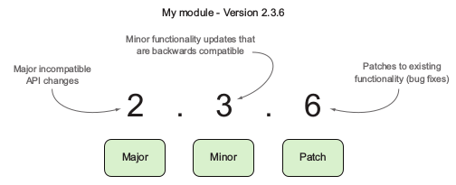

NODEJS 20.X.X
NPM
npm install paquete -g - Instala paquete globalmente.Asi convertimos el paquete un comando ejecutable
npm install paquete - Instala el paquete de forma local. Esto se hace cuando el paquete se necesita para el uso de la app local.
npm uninstall paquete -g - Desinstala paquete global
npm uninstall paquete - Desinstala paquete local
npm install package@0.0.0- Instala una version especifica
npm list -g --depth=0 - Lista los paquetes globales instalados
npm list --depth=0 - Lista los paquetes locales instalados
npm view paquete version - Muestra la version del paquete
npm search package - Busca un paquete
npm update -g - Actualiza los paquetes globales
npm update - Actualiza los paquetes locales
npm outdated -g - Lista los paquetes globales anticuados
npm outdated - Lista los paquetes locales anticuados
npm -v - Muestra la version de npm que esta instalada
npm install -g npm-check-updates - instala paquete para chequear actualizaciones
ncu -g - chequea paquetes global
ncu -g -u - actualiza los paquetes globales
ncu - chequea paquetes locales
ncu -u - actualiza los paquetes locales de package.json
Semver versiones semanticas

MODULOS DEL CORE
fs (sistema de archivos)
fs.appendFile(file, data[, options], callback) - añadir datos al final del
fichero
fs.appendFileSync(file, data[, options]) - añadir datos al final del
fichero de forma sincrona
fs.close(fd, callback) - cierra un archivo
fs.closeSync(fd) - cierra un archivo de forma sincrona
fs.createReadStream(path[, options]) - crea un nuevo objeto ReadStream
fs.createWriteStream(path[, options]) - crea un nuevo objeto WriteStream
fs.mkdir(path[, mode], callback) - crea un directorio
fs.mkdirSync(path[, mode]) - crea un directorio de forma sincrona
fs.open(path, flags[, mode], callback) - abre un archivo
fs.openSync(path, flags[, mode]) - abre un archivo de forma sincrona
fs.readdir(path, callback) - leer un directorio
fs.readdirSync(path) - leer un directorio de forma sincrona
fs.readFile(file[, options], callback) - leer el contenido entero de un archivo
fs.readFileSync(file[, options]) - leer el contenido entero de un archivo de
forma sincrona
fs.read(fd, buffer, offset, length, position, callback) - lee datos de un archivo
fs.readSync(fd, buffer, offset, length, position) - lee datos de un archivo de
forma sincrona
fs.rename(oldPath, newPath, callback) - cambia el nombre o ubicacion de un
archivo
fs.renameSync(oldPath, newPath) - cambia el nombre o ubicacion de un archivo de forma sincrona
fs.rmdir(path, callback) - borra un directorio
fs.rmdirSync(path) - borra un directorio de forma sincrona
fs.stat(path, callback) - consigue el estado de un archivo
fs.statSync(path) - consigue el estado de un archivo de forma sincrona
fs.unlink(path, callback) - borra un archivo
fs.unlinkSync(path) - borra un archivo de forma sincrona
fs.unwatchFile(filename[, listener]) - deja de vigilar cuando se producen cambios
en un archivo
fs.watch(filename[, options][, listener]) - vigila cuando se producen cambios en
un archivo o directorio
fs.watchFile(filename[, options], listener) - vigila cuando se producen cambios
en un archivo
fs.write(fd, buffer, offset, length[, position], callback) - escribe el buffer al
archivo
fs.writeSync(fd, buffer, offset, length[, position]) - escribe el buffer al
archivo de forma sincrona
fs.write(fd, data[, position[, encoding]], callback) - escribe los data al
archivo
fs.writeSync(fd, data[, position[, encoding]]) - escribe los data al archivo de
forma sincrona
fs.writeFile(file, data[, options], callback) - escribe data al archivo
fs.writeFileSync(file, data[, options]) - escribe data al archivo de forma
sincrona
fs.stat(path, callback) - consigue informacion del archivo
os (sistema operativo)
const os = require('os')
console.log('Hostname: ' + os.hostname())
console.log('OS type: ' + os.type())
console.log('OS platform: ' + os.platform())
console.log('OS release: ' + os.release())
console.log('OS uptime: ' + (os.uptime() / 60 / 60 / 24).toFixed(1) + ' days')
console.log('CPU architecture: ' + os.arch())
console.log('Number of CPUs: ' + os.cpus().length)
console.log('Total memory: ' + (os.totalmem() / 1e6).toFixed(1) + ' MB')
console.log('Free memory: ' + (os.freemem() / 1e6).toFixed(1) + ' MB')
ASYNC-AWAIT
async function doSomething() {
//...
const rate = await getApiLimit();
// avoid unhandled promise rejection with
const rate = await getApiLimit().catch(() => {});
// or
try {
const rate = await getApiLimit();
} catch(){
//...
}
}
function getApiLimit() {
return new Promise((resolve, reject) => {
const options = {
hostname: 'api.github.com',
port: 443,
path: "/rate_limit",
method: 'GET',
headers: {
'Authorization': 'Bearer ' + token[lib.getRandomNumber(0, 9)],
"User-Agent": "github stars repos",
'Accept': '/application/vnd.github.v3.star+json',
}
};
lib.makeRequest(options, null, function (err, data, headers) {
if (err) {
console.log('Error => ', err);
reject(-1);
}
resolve(data);
});
});
}
Patrones
Funcion asincrona anonima
let main = (async function() {
const data = await myAsyncFunc();
})();
Declaracion de funcion asincrona
async function main() {
const data = await myAsyncFunc();
};
Asignar funcion asincrona
let main = async function() {
const data = await myAsyncFunc();
};
let main = async () => {
const data = await myAsyncFunc();
};
Objeto y metodo de clase
// Propiedad de objeto
let obj = {
async method() {
const data = await myAsyncFunc();
}
};
// Metodos de clase
class MyClass {
async myMethod() {
const data = await myAsyncFunc();
}
}
Manejo de errores
try {
const data = await myAsyncFunc();
}
catch(e) {
// Error!
}
Paralelismo
// Asi tardaria 1000ms
async function series() {
await wait(500);
await wait(500);
return "done!";
}
// Asi tardaria 500ms
async function parallel() {
const wait1 = wait(500);
const wait2 = wait(500);
await wait1;
await wait2;
return "done!";
}
async function parallel() {
const [wait1, wait2] = await Promise.all([
wait(500),
wait(500),
]);
return "done!";
}